Indledning
Vi er 3 elever fra HTX → Roskilde, som vil beskæftige os med, at skabe/fremstille en hjemmeside + plakat, hvor at hjemmesiden har til formål, at kunne hjælpe de nye 1. årselever både fagligt og praktisk på den bedst mulig måde, så de eventuelt ikke oplever nogle vanskelige problemer omkring projektet. Dette vil være en kæmpe hjælp til især de nye 1. årselever, som enten delivs eller slet ikke er dus med matematik eller fysik. Ikke kun med, at det handler om matematik og fysik, så vil der også være en delvis procs omkring systemudvikling baseret på vores hjemmeside.
Vi vil her i rapporten prøve tage dig læseren med hånd i hånd, og gennemgå hvad vi har gjort af overvejelser, tænkt af tanker og gjort gennem projektet fra start til slut. Vi vil gennemgå hvordan vi analyserede opgaveoplægget, fandt frem til en praktisk problemformulering, fandt løsningsforslag, planlagde og udviklede produkter. Vi vil så vidt det er muligt gennemgå hvad vi har tænkt, så du kan lære mest mulig fra vores rapport, og replikere udviklingen så vidt det er din intention.
NB: Vi har undervejs i gennem rapporten referet til forskellige hjemmesider, hvor vi f. eks. har skrevet "Link 1". Her forstås der, at linket kan findes i bunden af rapporten, hvor at litteraturlisten befinder sig.Målet for opgaven
Målet for opgaven er at designe og realisere et setup for (lærende og/eller underholdende) videndelig og/eller storytelling med afsæt i den viden vi har fået i ballonprojektet. Målet er at vi kan tage udgangspunkt i et oplæg fra opgaveoplægget, ofrmulere en problemformulering, finde en relevant og aktuel målgruppe og udvikle et eller flere produkter. Vi skal vise at vi kan planlægge, dokumentere og reflektere, kommentere og konkludere på resultatet og evt. problem og fejl vi skulle støde på.
Analyse
Efter at have kigget på opgaveoplægget, satte vi os ned og diskuterede om diverse idéer og forslag. I slutning af første modul kunne vi fortælle vores idéer og tanker til resten af klassen med en mundtlig fremlæggelse. Denne fremlæggelse var ikke kun til gavn for andre, men også meget for os. Vi fik indblik i hvad de andre elever havde tænkt af tanker, og fik forskellige input til videretænkning. Vi endte på det første oplæg, e-learning. Allerede fra starten virkede e-learning, som et oplagt oplæg for os, da vi allerede havde en god idé.
Problemformulering
Første år på gymnasiet er altid sjovt. Man er et nyt sted, med nye mennesker og en hel ny begyndelse. Nogen har det nemt, andre mindre nemt. Men lige meget hvad, ender det ud i det samme projekt på HTX → Roskilde, ballonprojektet. Det problem vi har tænkt os at løse er at det ikke altid lige nemt med udregningerne på ballonen. Det er et større stigende problem at førsteårselever laver fejl i beregninger grundet forvirring, og ender ud med en hel anden ballon end hvad de regnede med.
Kommunikationsplanlægning
Målgruppe
I denne rapport vil vi gerne appellere til de IT-interesserede 1. års elever som delvis har problemer med at komme i gang med ballonprojektet. Vi vil derudover tage hensyn til unge, som har en kæmpe interesse inden for informationsteknologi (IT) og systemudvikling. Dette er især for 1. årselever, som kan lide at analysere, undersøge og finde svar på tekniske problemer. Her får både eleverne læring omkring ballonprojektet og hvordan man koder og opbygger en meget passende hjemmeside.
Lasswell's Kommunikationsmodel
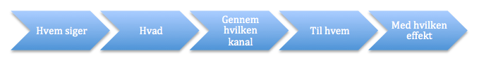
Hvem siger
Tre gymnasieelever fra HTX → Roskilde, som har arbejdet og analyseret forskellige problemstillinger i form af ballonprojektet.
Hvad
Website som formidler over WWW, samt en poster omkring ballonprojekt.
Til hvem
De nye 1. årselever som har brug for hjælp til ballonprojektet.
Med hvilken effekt
Bedre forståelsen for fremgangen af den teoretiske del af ballonprojektet.
Løsningsforlag
https://codeanywhere.com/editor/# Til at løse vores problem med forvirring af udregninger for ballonprojektet på HTX → Roskilde, har vi haft et par idéer. Vores første løsningsforslag er en simulation af en varmluftballon, hvor brugeren har mulighed for at ændre på parametre, som f.eks. højde eller brændstof. Idéen er at give elever mulighed for at afprøve idéer for deres varmluftballon i en kunstig simulation. Dette løsningsforslag vil passe til andet oplæg for “Databehandling og præsentation”.
Vores næste løsningsforslag er en guide til Ballonprojektet. Denne guide består af i at udvikle to produkter: en hjemmeside og en poster. Hjemmesiden vil give et overblik over de forskellige beregninger, såsom, hvordan finder ballonens krummekugles overfladeareal eller noget såsom ballonens totale banelængde. Derudover vil hjemmesiden også fortælle, hvad for nogle gode tips og tricks der er, såsom, hvordan man laver en god forside og hvordan man kreerer gode illustrationer. Vores poster vil være måden vi “fanger” vores modtagere på. Posteren vil have små korte tips og trick, men vil i sidste ende guide elever videre ind til på vores hjemmeside (studieweb). Dette løsningsforslag vil passe til det første oplæg for “e-learning”.
Derudover kan vi beskrive vores løsningsforslag nærmere og grundigere ved, at benytte en designmodel, som tager udgangspunkt i de interaktive medier, som man ofte benytter når vi kommunikerer om design af produkter som fx. plakater , foldere og aviser eller computerspil og websteder, som vi har med at gøre. Designmodellen ses nedenunder, hvor man kan se, at den tager udgangspunkt i det visuelle design, informationsdesign og til sidst interaktionsdesign.
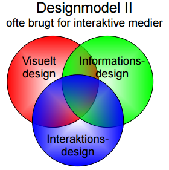
Visuelt design
Vi har til hjemmesiden ikke haft de store visuelle design planer. Hjemmesiden skal i så fald være så enkel og simpel som overhovedet muligt. Da hjemmesiden er lavet til at lære noget, skal det visuelle ikke distrahere brugeren i at læse/arbejde. Design
kan også til en grad ødelægge brugeroplevelsen, forvirre brugeren og i sidste ende gøre mere skidt end godt. Af hensyn til plakaten vil det visuelle design betyde meget, faktisk størstedelen. Hvis en plakat ikke ser spændende nok ud, vil folk ikke engang
tage chancen for at spilde deres tid med den.
Når det gælder simulationen derimod, ville det visuelle design betyde en større del. Det skal være godt. Det er ligesom videospil nu til dags, hvor folk kan spille et spil kun på grund af det visuelle, da det kan skabe en fantastisk oplevelse. I den forstand, skal en simulation jo også kunne være tydelig nok til at man kan se hvad der foregår.
Informationsdesign
Herunder taler man typisk om tre områder: tekst design, informative illustration og rum design. I forhold til tekst design indeholder vores hjemmeside både forklaringer og en afgrænset teori omkring hvordan formlerne fungere. Desuden har vi også et indhold
omkring, hvordan en rapport kan struktureres, hvor vi både har tips og hjælp til disposition af ballon. Vi har formuleret nogle korte og ganske forståelige sætninger i vores guide. Derudover har vi en masse illustration igennem vores guide, hvor vi både
har taget udgangspunkt i det faglige og tilføjet illustrationer til, at give modtageren et bedre overblik og forståelse inden for området.
Interaktionsdesign
Når vi snakker interaktionsdesign med hjemmesiden er der ikke det store at komme efter. Hjemmesiden skal bare være et hjælpemiddel, som kan være i stand til, at overføre/formidle vores viden/hjælp videre til de nye 1. årselever. Til dette kræves ikke
det store, da brugeren ikke skal interagere med noget, som skal give feedback. Til en vis forstand, skal der heller ikke tænkes over noget når det gælder plakaten. Man kunne dog diskutere om designet af et link skulle være noget folk skal interagere
med, men det er stadig meget lidt.
Når vi snakker en simulation, hvor der skal kunne ændres parametre, er interaktionsdesign næsten altafgørende. Hvis folk ikke kan finde ud af at interagere med programmet, kan det næsten være lige meget, så er programmet nærmest bare et skærmbillede.
Sammenligning og valg af løsningsforslag
Vi var alle glade for vores to løsningsforslag, men det ene var nødt til at udgå. Det første løsningsforslag ville kræve klart mest arbejdskraft af hensyn til tid, dog er det ikke et krav “færdiggøre” programmet i den forstand at produktet ikke behøver at være fuld implementeret. Trods muligheden for at kunne vise høje IT-fagelige evner i første løsningsforslag, virkede det lidt meningsløst for os. Vi tænker at en simulation vil være sjov, men ikke så brugbar i sidste ende. Vi ser ikke at nye elever på første år, kan få gavn af programmet. På den anden side er vores andet løsningsforslag ikke helt skørt. Det vil give os mulighed for at vise tydelig individuelle evner, samt få udviklet meningsfulde/brugbare produkter. Produkterne ville kunne bruges til fremtidige elever, både som støtte, men også om undervisning eller opsamling på emner man ikke lige helt forstod eller var fraværende til.
Af hensyn til design, tænkte vi ikke så meget over det. Ja, hjemmesiden og plakaten, kræver ikke de store design planer, men vi tænker ikke at planlægningen af designet for en interaktiv simulation ville blive vores største problem, hvis vi valgte det.
Afgrænsning
Vi vil hermed implementere en hjemmeside, hvor vi både tager udgangspunkt i almindelige 1. årselever samt IT interesserede 1. årselever. Dette giver eleverne både mulighed for, at få et indblik i hvordan ballonprojektet overhovedet fungere samt hvordan man kan gribe godt fat om de små irriterende formler og beregninger som nogle elever ikke synes godt om. Dermed får vi skabt et rum, hvor elever kan øge deres forskellige interesser/kompetencer både fagligt inden for det matematiske og fysiske samt det praktiske.
Omkring vores løsningsforslag vil vi opbygge en hjemmeside, hvor der både vil være adgang til hvordan en rapport eksempelvis kan struktureres og hvordan man kan benytte sig af de forskellige formler og regneregler. På denne måde vil eleverne være i stand til, at udføre en meget tilfredsstillende projekt både indholdsmæssigt og i forhold til det praktiske der udføres under konstruktion af ballon.
For at få give de nye 1. årselever den bedst mulige hjælp både indholdsmæssigt og i forhold til det praktiske vil vi både skabe forskellige funktioner i hjemmesiden og skabe en tydeliggjort overblik over hjemmesiden, så man nemt kan finde rundt i hjemmesiden.
Derudover vil der også være en kort beskrivelse til hver matematiske/fysiske formler/regneregler, hvis man eventuelt skulle være i tvivl omkring en formel eller beregning.
Vi vil desuden også fremstille en poster relateret til vores guide omkring ballonprojektet, hvor at elever som er interesseret i design udvikling kan få inspiration af vores poster.
Alt i alt kan man sige, at vi fremstiller en meget overskuelig hjemmeside + poster relateret til vores guide til ballonprojekt samt forskellige funktioner i hjemmesiden til gavn for de nye 1. årselever.
Valg af værktøjer
Vi har valgt at benytte os af en masse forskellige værktøjer, hvor hvert værktøj har hver sin individuel opgave i forhold til opgaven. Vi har blandt andet benyttet os af Gimp, Notepad++, Illustrator og Atom. Nedenfor ses et skema, hvor man kan få et overblik over hvad de forskellige værktøjer havde for en opgave i vores opgave.
| Værktøj | Anvendelse |
|---|---|
| Atom | Programmering af hjemmeside |
| Adobe Illustrator | Illustrationer |
| Ganttproject | Lave tidsplan for perioden af opgaven |
| GIMP | Illustrationer |
| Notepad++ | Programmering af hjemmeside |
| Scribus | Benyttet til fremstilling af poster |
| Google Docs | Tekstskrivning |
| MathJax | LaTeX i HTML |
Ressourceplanlægning
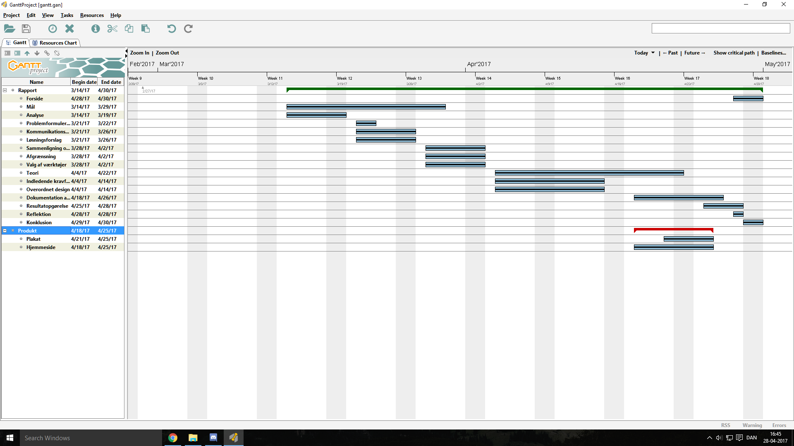Planlægning af vores tid og ressourcer skete med et gantt diagram. Vi planlagde vores overordnet tid, men ændrede lidt i det undervejs, så det passede med vores individuelle planer. Ressourcer blev skrevet på undervejs, som vi tog opgaver op og arbejdede. Vi har dog ikke taget stilling til “ressourcemængden” altså arbejdstid, da vi ikke rigtig har haft mulighed for at måle det. Den endelige ressourceplan kan findes under bilag.
Teori
W3C
World Wide Web Consortium er et fællesskab/organisation hvor både medlemmer, udviklere, selskaber og offentligheden arbejder sammen for at danne nogle gode og ordentlige webstandarder. W3Cs standarder står for en “Open Web Platform” til applikationsudvikling til web’et, for at give udviklere mulighed for at udvikle interaktive applikationer til alle enheder. Disse standarder indeholder specifikationer og guidelines til at udvikle applikationer, som ikke bare er bedre udvikleren, men også slutbrugeren. Heriblandt standarder for hvornår du skal tage stilling til handicappede, som vil give applikationen mulighed for at række ud til flere brugere, men som i sidste ende også kan øge brugervenligheden. Nogle af de standarder W3C har valgt at anbefale er blandt andet HTML, CSS, SVG, XML, osv.
HTML + CSS
HTML og CSS er to af de fundamentale teknologier der er brugt til udviklingen af hjemmesider.
HTML også kendt som HyperText Markup Language er et programmeringssprog,
som benyttes under tilfælde af når indholdet i en hjemmeside skal struktureres.
HTML har en lang række forskellige HTML-elementer, som hovedsageligt består af forskellige tags, som har hver sin egen funktion.
Et tag kan defineres, som det der står imellem “<” og “>”. Den første tag, som er en nødvendig tag er <!DOCTYPE> tagget som definerer dokumenttypen.
Et tag består hovedesageligt af et start og slut tag, som skrives på følgende måde; <TagName> og </TagName>.
TagName referer til de valgte tag, som vil benytte. Der findes en række forskellige tags,
heriblandt, “Text Codes”, “Link Codes”, “Image Codes”, Background Codes”, “Scrollbox Codes” og “Color Codes” som kan bruges efter eget valg.
HTML sproget bruges kort sagt til, at justere indholdet på en hjemmeside, herunder ved hjælp af de forskellige tags.
CSS er også kendt som Cascading Style Sheets, og er et sprog der er brugt i stylesheets til at beskrive elementer i et markup sprog.
Det er primært brugt i forbindelse med HTML til udviklingen af websider til styling og layout. CSS’en kan både skrives inde i HTML-dokumentet,
eller der kan referers til en ekstern fil. CSS har i sig selv ikke så meget “funktionalitet”,
og det er derfor der gennem årene er kommet flere pre-processors, der tilladte i deres syntax at lave mere avanceret kode,
for at gøre styling nemmere. Heriblandt snakker vi om funktioner som f.eks. Variabler. Nogle af de største pre-processors er sass, less og scss.
MathJax
Som nævnt tidligere har vi valgt at bruge MathJax til at kunne skrive LaTeX i vores HTML-dokument, og få det vist som en fin formel.
Det bedste sted at lære MathJax at kende, især når man lige er startet, er den officielle dokumentation på deres egen hjemmeside, se Link 1.
Der er to måder du kan bruge MathJax på. Enten kan du referer til en javascript fil på en anden computer i verden,
ellers kan du selv downloade og referer til den lokalt. Vi har valgt at referer til den på en anden computer, nemlig en CDN (Content Distribution Network).
MathJax har/havde selv en CDN, som lukker/lukkede i slutningen af April 2017. Vi har valgt at bruge ‘cdnjs’, som er meget kendt. De er hostet på Cloudflare,
som er kendt for at være helt i toppen, når det gælder stabilitet og performance til selv de største enterprise selskaber.
MathJax har ikke kun en configuration. En måde af konfigurere det på er inde script elementer i dokumentet, som inline eller ekstern fil. En anden måde er filen du vælger.
I dokumentationen refererer de til “MathJax.js?config=TeX-MML-AM_CHTML”, da den passer til de fleste. Denne fil er en af de mest kompatibel, og derfor også en af de største.
Den understøtter både MathML, AsciiMath og TeX, og renderer med CommonHTML. CommonHTML bruger kun web-safe skrifttyper,
hvilket betyder at der ikke kræves at hente yderligere matematiske skrifttyper til at skrive avanceret ligninger.
Derudover kan den også generere og derefter sende outputtet videre, hvilket resulterer i muligheden for at lave server-side generering. Dette betyder CommonHTML har mulighed for at være lyn hurtig, hvilket også er grunden til at det er standarden for MathJax. For vores tilfælde vil vi kun bruge TeX og outputte med CommonHTML, hvilket fører os til filen “MathJax.js?config=TeX-AMS_CHTML”, som er den mindste fil der bruger TeX og CommonHTML.
Indledende kravfangst
Som nævnt tidligere har vi ikke de store krav til hjemmesiden. Formålet er at lære noget, så derfor skal der ikke distraheres for mulig viden/læring. Siden skal være simpel og nem at bruge samt overskuelig, da brugeren ikke skal være i tvivl om noget. Hvis brugeren er i tvivl, så spilder vedkommende sin tid og brugeren kommer ultimativt til at ende med at skrotte siden, og aldrig vende tilbage. Statistik fra Sweor, se Artikel 1, siger nemlig at 94 % af et websites brugeres førstehåndsindtryk er designrelateret. Det er derfor et krav for os at have et overskueligt design, som ikke giver et dårligt førstehåndsindtryk.
For at hjemmesiden samtidig skal være hurtig, kræver det at vi bruger så mindst overflødige værktøjer som muligt. Der skal findes en balance mellem simpelthen for hastighed og design for brugervenlighed.
Som også nævnt tidligere betyder det visuelle design for plakaten rigtig meget. Plakaten skal være iøjnefaldende for at få brugerens opmærksomhed. Det er et krav at brugeren skal kunne gå forbi den på et til to sekunder, og derefter vide om det er noget for ham/hende.
Userstories
Herunder har vi nogle forskellige userstories, hvor vi har taget udgangspunkt i en lære og elev på HTX→Roskilde samt en elev på Roskilde Gymnasium. Disse forskellige ‘userstories’ fortæller kort omkring hvilke evner/kvalifikationer, som de enkelte personer gerne vil opnå i et givent område. Heraf i sammenhæng med vores afsluttende opgave har vi valgt, at give eksempler på userstories omkring systemudvikling og ballonprojektet.
Userstory 1- (Hvem) Jeg er lærer på HTX→Roskilde.
- (Hvad) Som gerne vil undervise mine elever i systemudvikling.
- (Hvorfor/fordi) Fordi at jeg gerne vil bruge det i både min undervisning, samt så kan de studerende bruge det i deres karriere.
- (Hvem) Jeg er en elev på HTX → Roskilde.
- (Hvad) Som gerne vil lære 1. års elever om hvordan man kan komme i gang med et ballonprojekt.
- (Hvorfor/fordi) Fordi jeg gerne vil have at 1. års elever får en bedre og mere klar forståelse inden for ballonprojektet.
- (Hvem) Jeg er en elev på Roskilde Gymnasium.
- (Hvad) Som gerne vil lære om hvordan systemet inde i computeren fungerer.
- (Hvorfor/fordi) Fordi jeg gerne vil have en brederer forståelse inden for systemet i computeren.
Overordnet design
Hjemmesidens design
Som nævnt tidligere skal der findes en balance mellem simpelthen for hastighed og design for brugervenlighed for hjemmesiden. Vi har valgt at lave et design består af primært kun HTML, men med meget lidt CSS. Idéen er at alt tekst, billeder og tabeller, skal laves i HTML. Vi vil ikke gøre brug af unødvendig tekstformatering i CSS, hvis vi kan gøre det i HTML, f.eks. fed- og kursiv skrift. CSS skal bruges til at hjælpe øjnene, og ikke til at lave ting alt for “fancy”. Vi foretrækker at teksten skal stå i midten af siden, da det ikke vil kræve det store, men samtidig hjælpe læsningens overordnet set. Vi foretrækker kanter/outlines i tabellen, både uden om det hele, men også mellem rækker og kolonner, da det vil gøre den nemmere at aflæse. Formler har vi valgt at bruge MathJax til, da det både simpelt og hurtigt, og ser godt ud uden at bruge for mange ressourcer.
Plakatens design
Vi har lavet plakaten sådan så den er meget iøjnefaldende, her menes at der er brugt en variation af lyse farver, da det er dem som fanger modtagerens øjnene. Vi har desuden også lavet illustrationer, som har til opgave at bringe vores tema og mål for opgaven ud til de forbipasserende, derfor er vores plan at vi blandt andet benytter en illustration af en luftballon, som vi brugte som forside til SO-ballonprojektet. Derudover forventer vi også at der er en henvisning til vores studieweb, da hele vores opgave vil ligge der.
Dokumentation af udvikling
Hjemmeside
Vi startede med at lave hele guiden inde på Google Docs for nemmere at kunne omskrive det til et .html dokument. Dette var der ikke de store problemer med, da vi ikke formaterede teksten alt for meget, da vi vidste det skulle et andet sted hen.
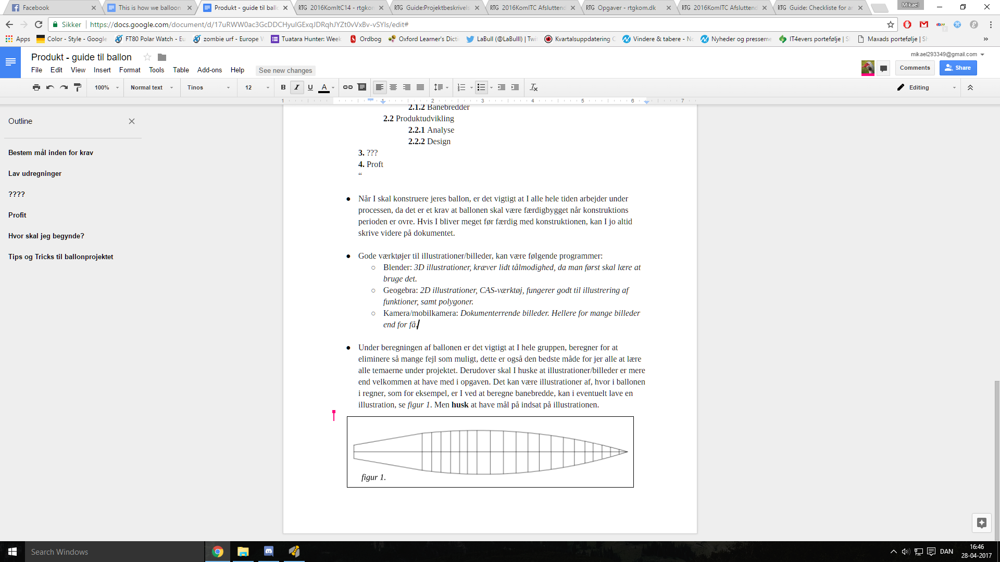Vi fik dog stadig et lille problem med en formelsamlingstabellen. Denne tabel indeholder en masse formler, som vi ikke umiddelbart kunne lave i HTML. Til dette problem fandt vi et javascript bibliotek kaldet MathJax, der kan rendere LaTeX i browseren.
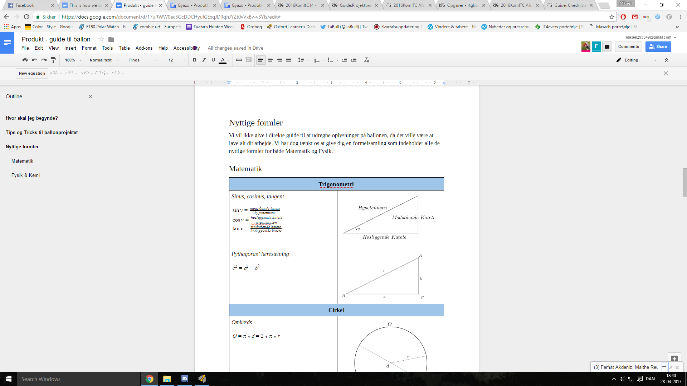 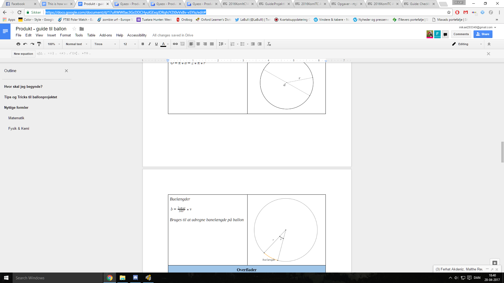 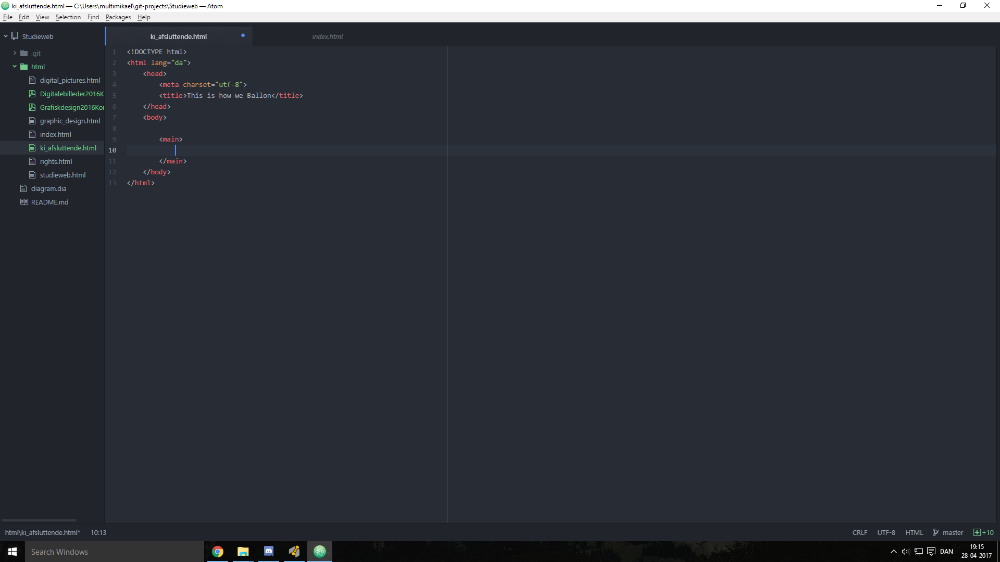 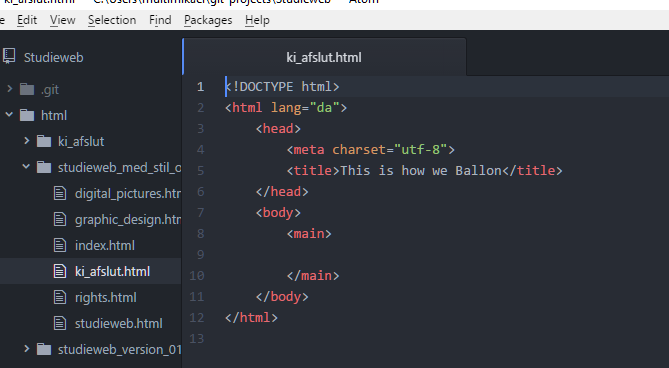Vi starter med at lave et nyt .html dokument. Idéen er at primært have alt hvad der skal vises på siden inde i vores main element, så det bliver nemmest for os alle at få sat siden ind i vores individuelle Studiewebs uden nogen problemer.

Vi startede med at sætte alt det “løse” tekst ind først. Overskrifterne omringede vi med henholdsvis header 1 (h1), header 2 (h2) og header 3 (h3) elementer. Hver afsnit blev delt op med paragraph elementer (p). Kursivt skrift blev omringet med itatic elementer (i). Fed skrift med bold elementer (b). & (og-tegnet) med erstattet med “\&” (uden anførselstegn). Vi efterlod med vilje resten til senere.
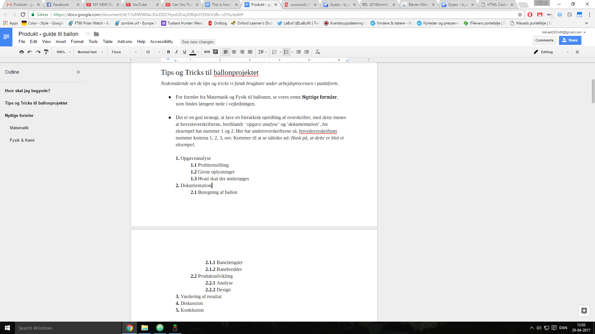 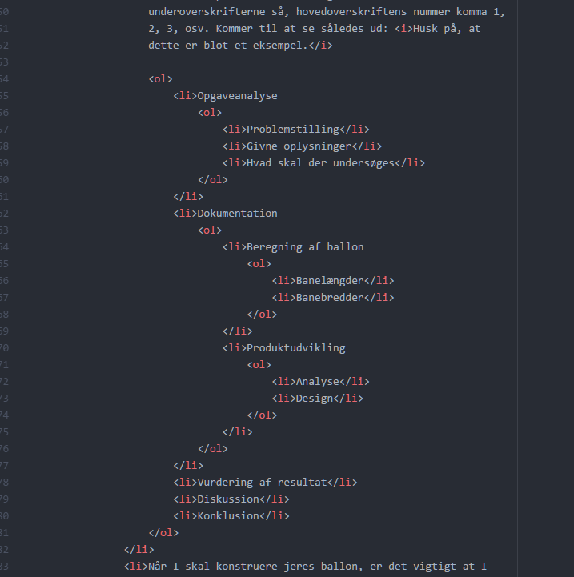 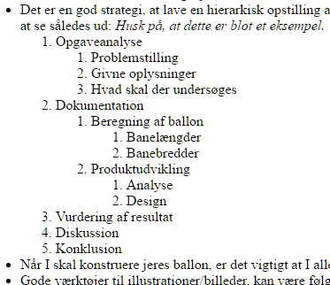Vi satte punktformen ind med unordered list (ul), punkterne for punktformen ind med list item (li). Idéen var at sætte nye lists ind i vores list items. Vi kom dog ud for et lille problem. Ved at sætte en unordered list ind i en list item, var der ingen problemer. Da vi satte en ordered list (ol) ind i vores list items var der ingen problemer. Men da vi prøvede at lave en nested ordered list, blev den ikke som vi vil have. Hvis vi kigger på W3C’s wiki, se Link 2, kan vi se at de gør det samme med samme resultat.
En hurtig internetsøgning, og du kommer forbi et svar fra Stack Overflow, se Link 3. Dette resultat er baseret på at bruge CSS til at ændre stilen på din ordered list. Trods at dette resultat virker fint ved første blik, valgte vi med ikke at bruge det.
For det første hvis du markerer list items i listen, bliver det ikke helt som det originalt er med kun HTML.
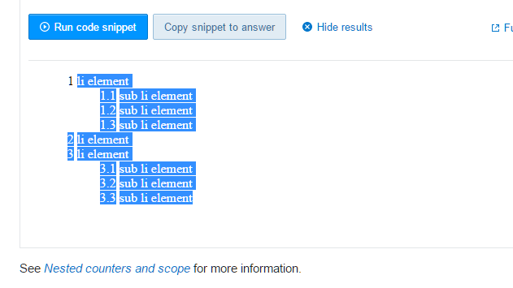 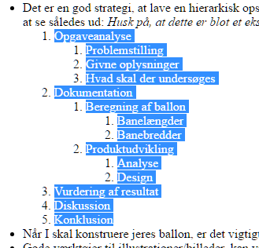 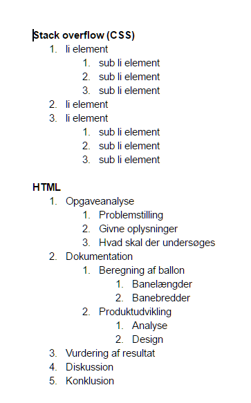Og hvis du kopierer det ind på Google Docs, giver det ingen forskel. Altså virker det bare som en falsk formatering. For det andet ser det ikke så dumt. Vi beholder det som det er, da det er det W3C anbefaler, hvis ingen yderligere CSS skal til.
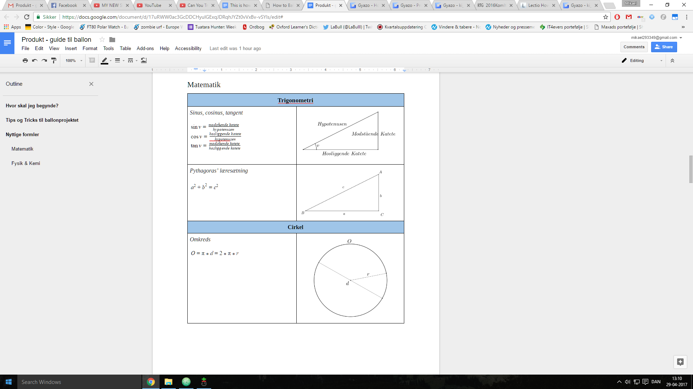Den næste opgave var at lave en tabel for formelsamlingen. Vi lavede en tabel med et table element (table). Hver række delte vi op med med en table row elementer (tr). Hver rækkes celler blev delt op med table cells elementer (td). Billeder satte vi ind med image elementet (img), med source attributen (src) for kilden til billedet, og alternative text attributen (alt) til alternativ tekst for billedet.
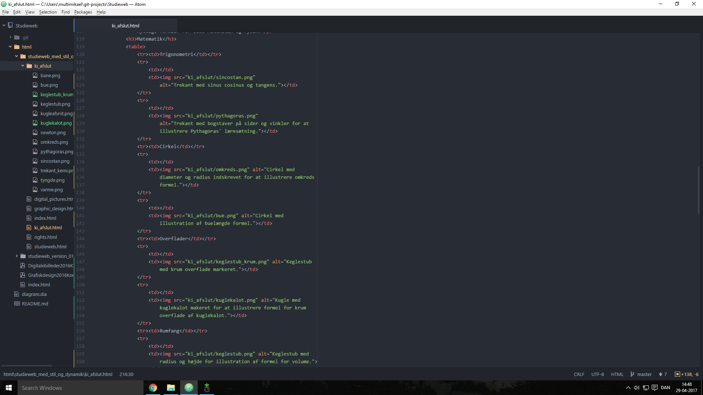Så mangler vi stadig de resterende tabelceller. Disse består af tekst og formler. Til formlerne har vi valgt at bruge MathJax, der tillader os at skrive LaTeX inde i dokumentet.
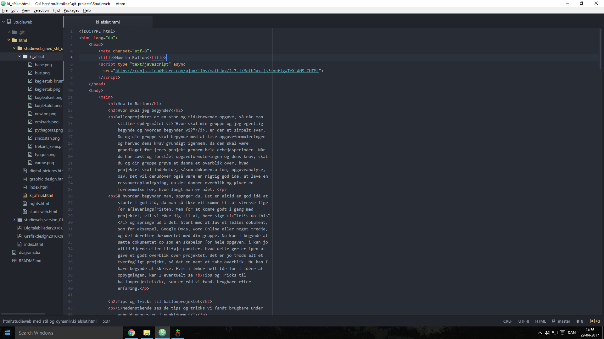 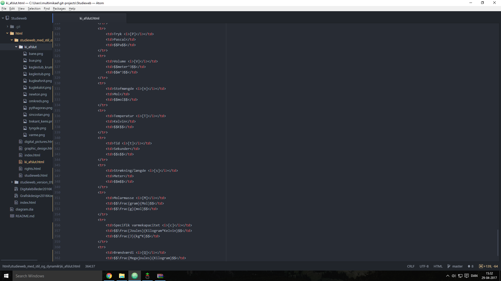 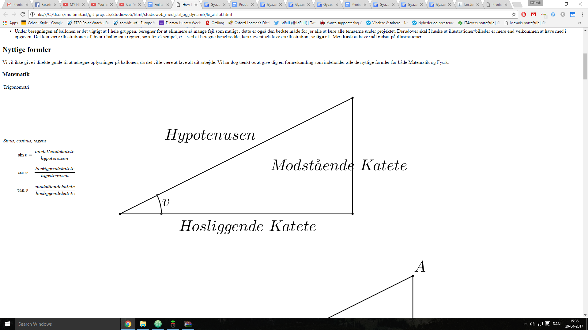På dette tidspunkt var guidens struktur færdig. Vi kunne nu begynde at finjustere siden, og begynde at style med CSS.
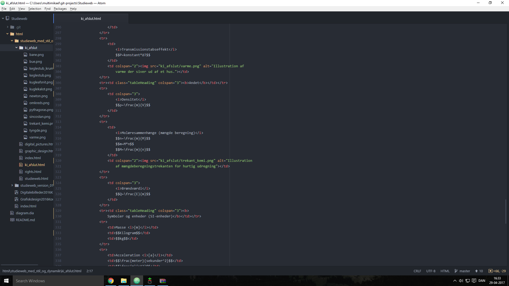 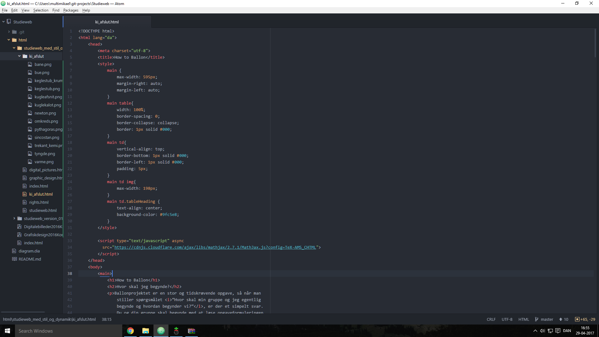Vi første vi gjorde var at finjustere cellerne i tabellen. Vi satte colspan attributen ind på de celler som skulle fylder flere pladser, heriblandt blandt andet overskiftscellerne.
Vi begyndte at style lidt med CSS. Vi satte en max-width ind for hele main elementet til 595 pixels, da det passer med en A4 side printet med 72 pixelperinch, se Link 4. Vi satte derefter margin-left og margin-right til auto, for at centere det hele. Vi gav selve tabellen en width på 100 % for at være sikker på at den fylder alt det plads ud den kan. Vi gav en border-spacing på 0, hvilket gør at der ikke er nogen ekstra kant mellem cellerne, så cellerne sidder så tæt på som muligt. Border-collapse gør at celle kanter vil flyde sammen, i stedet for at prøve at ligge så tæt på hinanden muligt. Vi gave også table elementet en lille sort kant på 1 pixel, som hjælper med at identificere den. Derefter definerede vi noget meget generelt for alle vores tabelceller. For det første vertical-align til top, hvor elementer førhen ville centrere sig vertikalt. Gav dem en lille sort kant på 1 pixel i bunden, der virker som skillelinje mellem rækker i tabellen. Gav dem også border-left, der virker som skillelinje mellem flere celler på samme række. Puttede også lidt padding på 5 pixel, der giver lidt mellemrum fra kanten i cellerne. Billederne var også lidt af et problem. Vi satte en max-width på 198 pixels på, der svarer til cirka en tredjedel af max-width af vores main element. Selvfølgelig stylede vi også vores overskriftsceller. Vi gav dem alle en class “tableHeading”, så vi nemmere kunne referere til dem. Vi satte text-align til center, så teksten blev centreret i cellerne. Vi satte også en blå baggrundsfarve ind med background-color.
Plakat/poster
Som sagt tidligere vil vi gerne fremstille en poster/plakat for at fange modtagerens opmærksomhed:
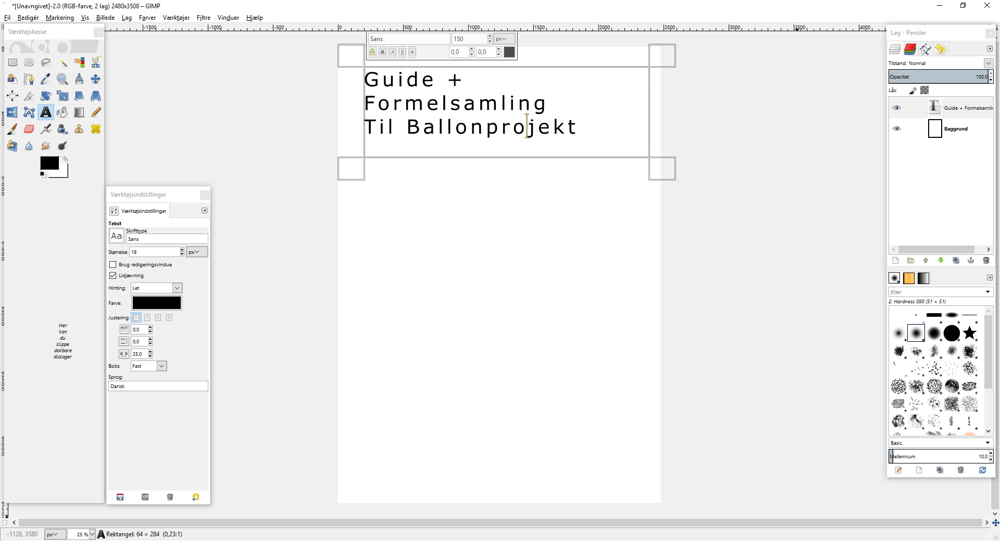Vi har valgt at lave plakaten med en opløsning på 2480 x 3508, da det svarer til et stykke A2 papir med en DPI på 150. Vi har også lavet en overskrift som vi mener vil fange øjnene for de forbipasserende elever på gangen. Som sagt vil vi gerne bruge lyse farver, da de også er virkelig iøjnefaldende, herved har vi valgt at bruge en turkis farve som baggrund, vi har desuden også finjusteret overskriften, så den står øverst i midten af siden på plakaten, se billedet nedenfor.
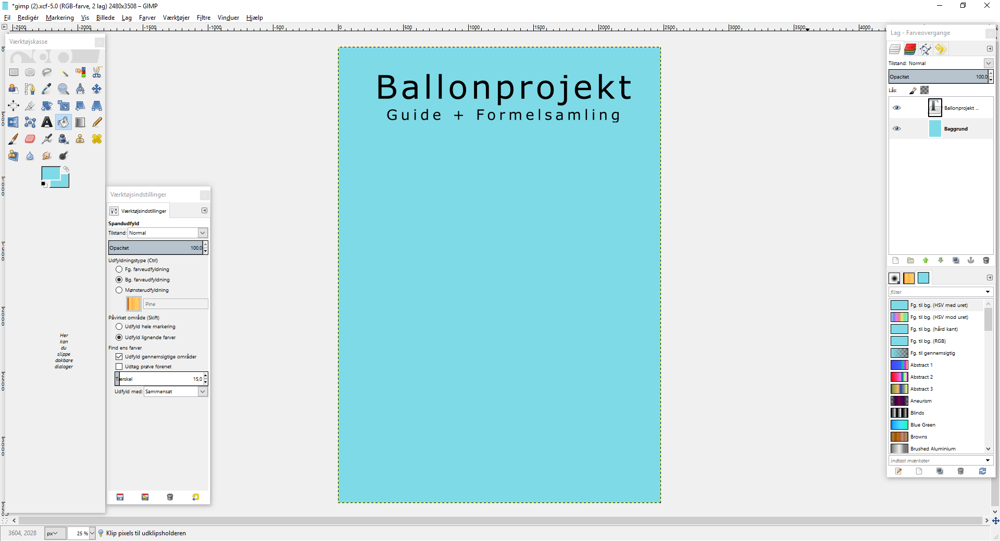Som sagt tidligere, har vi besluttet os for at der skal være en ballon på plakaten, her har vi så valgt den nemme udvej og taget en allerede lavet ballon fra selve vores SO-ballonprojekt aflevering. Ballonen blev brugt som del af vores forside i SO-ballonprojektet. Ballonen illustrerer i dette tilfælde, hvad for et emne der er tale om, helt uden at skulle læse overskriften på plakaten, så hvis der er en gruppe der er i gang med ballonprojektet, vil de nemt få øje på denne plakat.
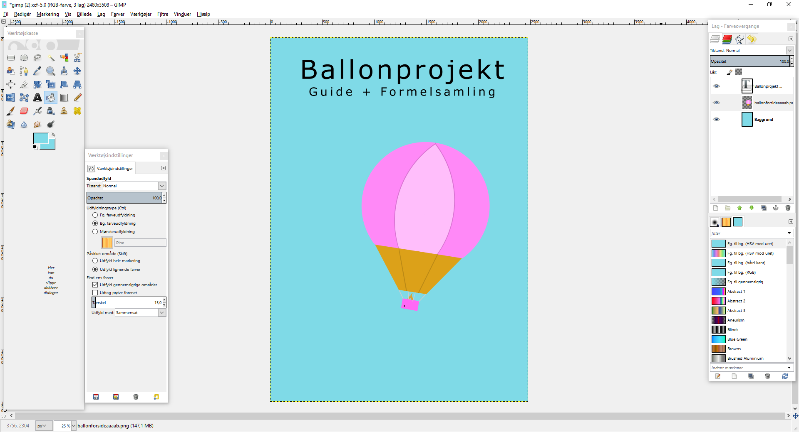 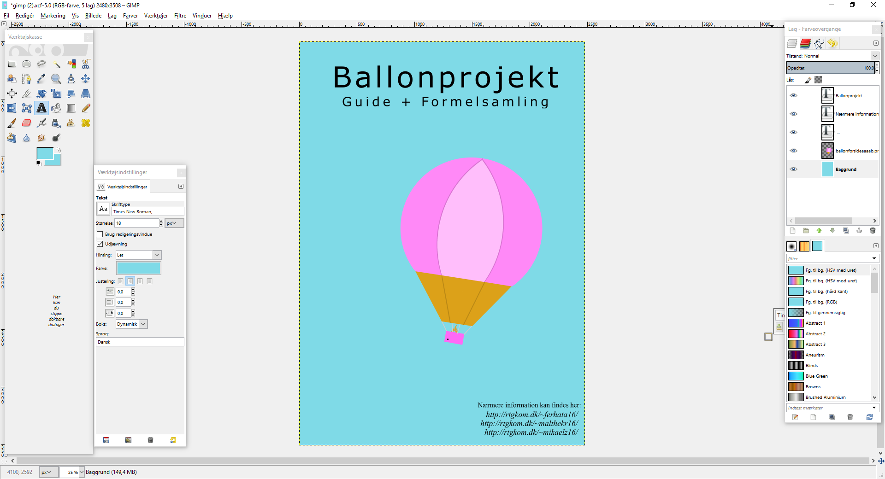
Der mangler stadig noget på plakaten, derfor har vi tænkt os at sætte vores studieweb link ind på den, så modtagerne kan se, hvor de skal lede for at finde vores primære produkt.
Derudover skal der også være en lille indledning, da dette
ikke er nok information til at få modtageren til at indse, hvad vores plakaten i det hele drejer sig om. Der står derfor “”
Der manglede stadig noget mere opmærksomhed dannende, derfor tilføjede vi en masse relevante spørgsmål, man måske har spurgt sig selv om under ballonprojekt perioden. Disse spørgsmål er også de spørgsmål vi vil gennemgå på vores studieweb i “Tips og Tricks”. Nu er vores plakat færdig.
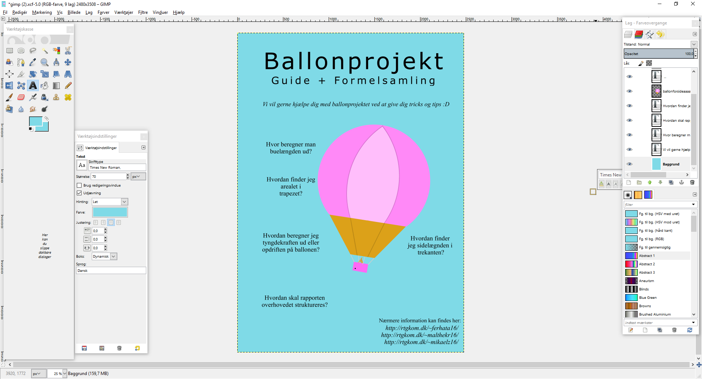Resultatopgørelse
Idéen bag alt det her var, at hjælpe kommende 1. årselever med ballonprojektet, som der også er beskrevet i vores problemformulering. Til dette valgte vi, som sagt at fremstille to produkter, som skulle fungere, som et hjælpemiddel til overførsel af vores viden til de nye 1. årselever.
Vores planer omkring fremstilling af en hjemmeside + plakat er opnået, hvor vi desuden kan sige, at vi både har opfyldt vores problemformulering samt det valgte løsningsforslag. Vi mener, at vores simple hjemmeside i store træk give gavn for de nye 1. årselever både indholdsmæssigt samt i forhold til det praktiske (herunder konstruktion af ballon).
Vi fik opfyldt kravet om en simpel og hurtig side. Vi lavede ikke noget særlig unødvendig. Vi fik designet tabellen, så den er nem at læse, ser godt ud, og kræver ikke det at indlæse. Vi fik opfyldt vores overordnet design idéer uden de store problemer.
Vi fik lavet en plakat der ser rigtig god ud. Vi fik opfyldt kravet om at lave en iøjnefaldende plakat ved at bruge iøjnefaldende lyse farver og illustrationer som selv Bob Ross kan være stolte af.
Reflektion
Alt i alt kan vi sige, at det er været et enormt interessant forløb, hvor vi fik samlet op på meget vi har lært gennem året. Selve projektet gik rigtig godt. Produktion af produkter gik fint uden de store problemer. De små problem fik vi løst på en hensigtsmæssig måde. Det mest interessante for os var helt klart at producere produktene. Det at have et stort projekt med mange muligheder, var helt fantastisk. Der var stor frihed, og mange måder at løse problemer på.
Konklusion
Om problemet med førsteårselever der laver dårlige varmluftsballoner er løst, er ikke til sige. Men vi har dog lavet to produkter som ihvertfald kan hjælpe dem på vej. Resultatet blev to helt fantastiske produkter som vi alle kan stå ved. Om læreren synes at vi har opnået målet for opgaven er ikke til at sige, men vi fik da opnået mere end et personligt mål med sådan et stort fantastisk projekt.
Bilag
Litteraturliste
| WEBSITES | |||
|---|---|---|---|
| Reference | Ophav | URL-Adresse | Dato |
| Link 1 | MathJax | http://docs.mathjax.org/en/latest/start.html | Sidst ændret 24. april 2017. |
| Link 2 | World Wide Web Consortium (W3C) | https://www.w3.org/wiki/HTML_lists#Nesting_lists | Sidst ændret 14. marts 2014, kl. 04:43. |
| Link 3 | Stack Exchange Inc. cc by-sa 3.0 |
https://stackoverflow.com/questions/4098195/can-ordered-list-produce-result-that-looks-like-1-1-1-2-1-3-instead-of-just-1 | Svar sidst ændret: 13. februar 2017, kl. 15:54. |
| Link 4 | i56.org Ian Turner |
http://www.papersizes.org/a-sizes-in-pixels.htm | Set 25. april 2017 |
| Artikel 1 | Sweor, LLC | https://www.sweor.com/blog-posts/heres-why-first-impressions-on-your-website-are-killing-your-business-6-statistics-your-business-cant-live-without | Udgivet 12. april 2016 |
| - | World Wide Web Consortium (W3C) | https://www.w3.org/ | Set 25. april 2017 |
| - | MediaLab på HTX→Roskilde | http://rtgkom.dk/ | Set 14. marts 2017 - Projekt start |
Kildekode, Gantt diagram (Ressourceplan)
Se Bilag på Studieweb.
http://www.rtgkom.dk/~ferhata16/afsluttendeopgave.html
http://rtgkom.dk/~malthekr16/afsluttendeopgave_e-learning.html
http://rtgkom.dk/~mikaelz16/studieweb_med_stil_og_dynamik/ki_afslut_front.html